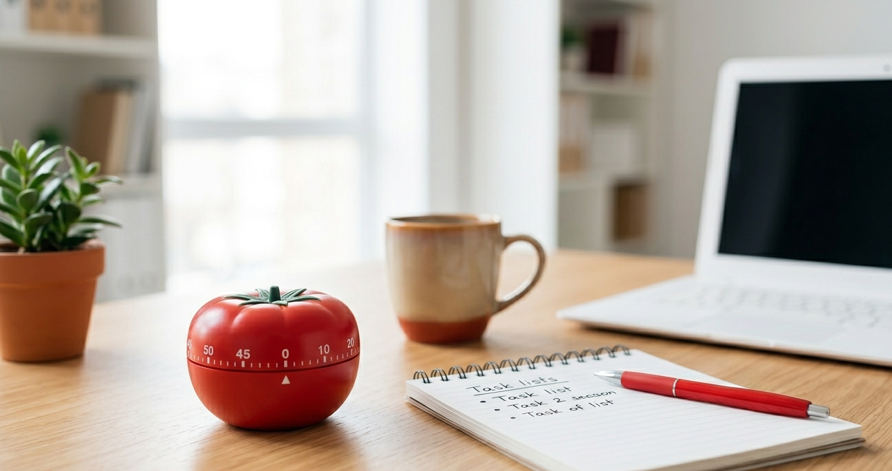
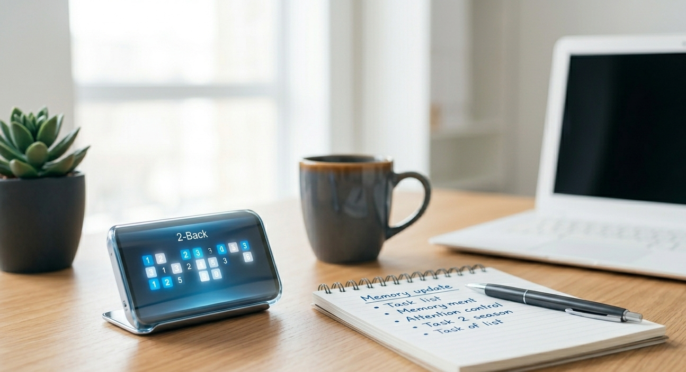

「スマホ認知症」を防ぐ脳の筋トレ｜N-Back課題によるワーキングメモリ強化術
情報の洪水によって疲弊した脳の前頭前野を再起動。一時的な記憶の保持と更新を強制し、クリアな思考を取り戻すためのトレーニング。
スマホ依存や集中力、思考の整理について。日々の作業を整えるための覚え書き。
情報の洪水によって疲弊した脳の前頭前野を再起動。一時的な記憶の保持と更新を強制し、クリアな思考を取り戻すためのトレーニング。
脳のデフォルト・モード・ネットワークを制御し、蓄積したノイズをリセット。集中力の土台を作るための習慣。
なぜ作業中にスマホを触ってしまうのか。脳の仕組みと、物理的に集中環境を作るための具体的な工夫について。

25分集中して5分休む。シンプルな手法を、飽きずに継続するための設定やマインドセットの解説。

情報の処理スピードを上げるトレーニング。日常の判断力や集中力にどう影響するのかをまとめました。